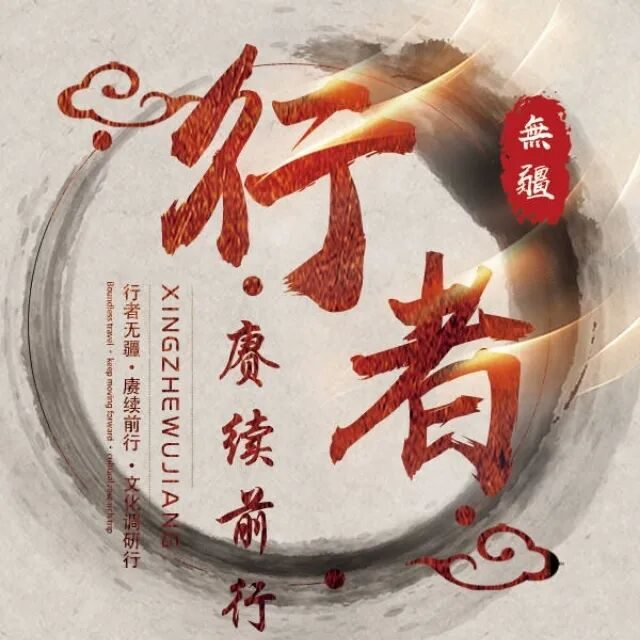
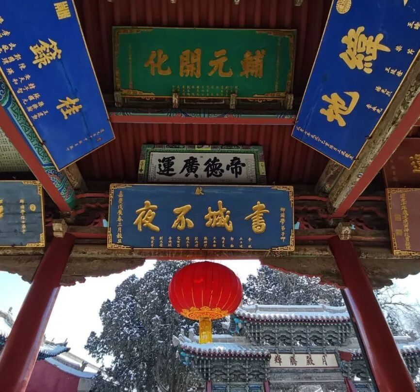
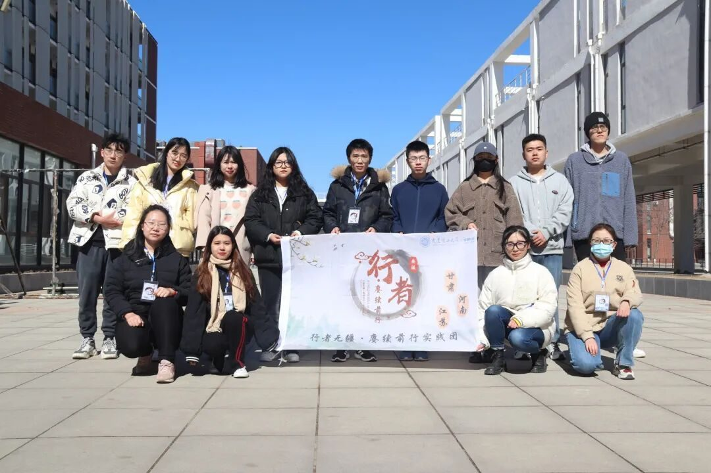

行者有思，文化有灵

通过一次独特的线上调研，在江南、中原与西北之间徜徉，我看到了这些文化独属于自己的特点，而这些特点，也让我对于他们，有了新的认知。

扬州，是一名长袖善舞的女子。她温婉，风情，象征着岁月静好，象征着与世无争。扬州，也是一名愤世嫉俗的墨客。他狂放，倜傥，带着一丝自傲，遗世独立。

南阳，是一位庄严肃穆的清官。他古板，不苟言笑，却也爱民若子，两袖清风。

南阳，也是一位巧夺天工的工匠，一丝不苟地创造了绝美的瓷器，以千锤百炼承载着瑰丽的文化。
南阳，是一个饱经风霜的老者。虽然他历经磨难，却也笑对着风雨。在讲述他的故事时，最常提到的不是所经历过的磨难，而是那些帮助过他的友人；而武威，更像一个粗中有细的汉子。他不仅有着西北民族的豪迈，也有着汉族文化的传承。

文化是一个很大的东西，它贯穿古今，见证了兴衰，领略了一代代才人的芳华。它存在于书籍中，让我们能即使相隔千里，也能感受到它的芳彩；它更存在于人文风俗中，让我们能跨越千年，领略到古人的风情。在行者无疆，我感受到了从未感受过的文化，让我真真切切的体会到了，读万卷书，行万里路。
来源 | 行者无疆实践团
文字 | 张卓凡
排版 | 李春慧
审核 | 温兆琪 朱华玮